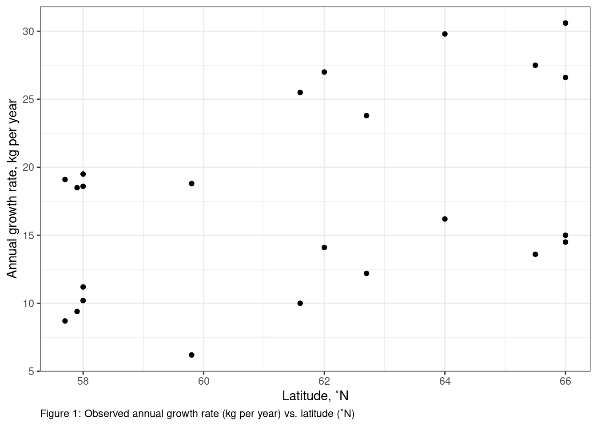
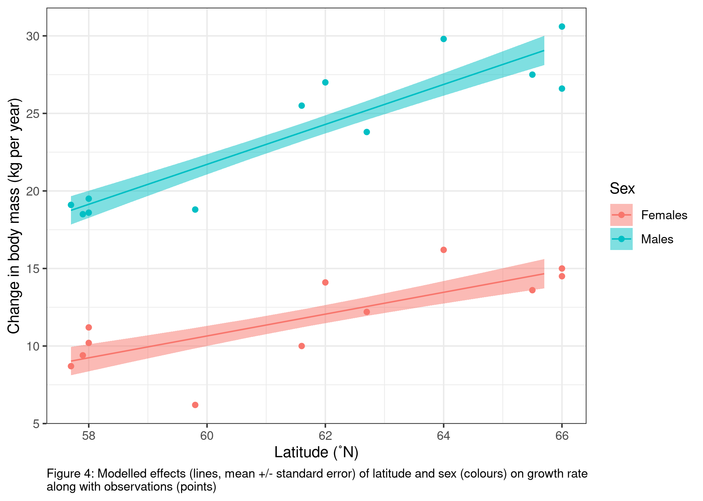

how to communicate motivations, methods and results of your data analysis and hypothesis testing for publication as a biological report/article
Communicating your hypothesis testing results
Here we will walk through your statistical modelling framework and discuss how to communicate motivations, methods and results of your data analysis and hypothesis testing for a biological report/article (& the exam!).
Here again is our statistical modelling framework:
A familiar example
I’ll use the following example case as I discuss how to communicate your results1:
You are interested in moose (or elk, Alces alces) and how their growth rate changes from population to population. You find information on mean annual weight change by moose in 12 locations in Sweden. You wonder if latitude can explain some of the variability in growth rates you are observing. You also wonder if minimum winter temperature might explain some variability in growth rate. Finally, you wonder if changes in growth rate with latitude and/or winter temperature depend on each other (i.e, latitudinal dependent effects on growth rate depend on what the minimum winter temperature is) and/or sex (male and female) - i.e. the environmentally dependent change in growth rate depends on what sex the animal is.
And here’s a screenshot of the readme file for the moose data:
RESPONSE(S)
The task:
Your response variable is the observed variability you are trying to explain. Your response forms your research question - i.e. “why is my response varying?”. In this section, you need to identify the variability you are trying to explain and why (your motivation).
The code:
Code supporting your tasks in this section allow you to import your data and help you describe your response variable, e.g.:
rm(list=ls()) # make sure your workspace is clear#Import the datamyDat <-read.table("ExDatComm.csv", # file namesep =',', # lines in the file are separated by a comma - this information is in the README filedec ='.', # decimals are denoted by '.' - this information is in the README filestringsAsFactors =TRUE, # make sure strings (characters) are imported as factorsheader =TRUE) # there is a column header in the filestr(myDat) # check the structure of the data file
summary(myDat) # get summary information of each column
Study Sex MassChange DDLat WTemp
Min. : 1.00 Females:12 Min. : 6.20 Min. :57.70 Min. :-11.900
1st Qu.: 3.75 Males :12 1st Qu.:11.95 1st Qu.:58.00 1st Qu.: -8.400
Median : 6.50 Median :17.35 Median :61.80 Median : -6.600
Mean : 7.00 Mean :17.77 Mean :61.60 Mean : -6.100
3rd Qu.: 9.75 3rd Qu.:24.23 3rd Qu.:64.38 3rd Qu.: -2.225
Max. :14.00 Max. :30.60 Max. :66.00 Max. : -1.700
Source
Gothenburg: 6
Lund : 8
Stockholm :10
range(myDat$MassChange)
[1] 6.2 30.6
The write-up:
Use the code above, the data readme file, as well as supporting literature to communicate about your response variable and motivation. Include:
what your response variable is
why you want to explain variability in your response
your research question
how your response variable was measured and a description of how your response varies. For example, give the range in your response if possible. If your response is a category, give the levels of the category (e.g. alive vs. dead). Always give units, if applicable.
For example:
Here I want to explain variability in growth rate in moose (Alces alces). Moose size will be related to survival rates, and likely also their ability to reproduce (e.g. Sand et al. 1995). Being able to explain what controls growth rates in moose may help us explain why some populations are more productive than other populations, and it will help us predict productivity for populations at other places or times.
My research question is “why does growth rate vary?”. My observations of growth rate were measured from adult moose across 12 locations in Sweden. The growth rate varied from 6.2 to 30.6 kg per year.
PREDICTORS
The task:
Here you will identify the predictors in your model - i.e. what variables might explain variability in your response. To write-up this section, start with the biological mechanism (or process) that make you think the predictor could be influencing your response. Then describe how that predictor was measured. At this point you might identify mechanisms that you are not able to measure, e.g. because they were beyond the scope of your study. Make note of these. You will have a chance to talk about them at the end of this exercise (in Reporting).
The code:
Code supporting your tasks in this section will help you describe your predictors, e.g.:
# Getting information on my predictorsrange(myDat$DDLat) # ranges for continuous predictors
[1] 57.7 66.0
range(myDat$WTemp) # ranges for continuous predictors
[1] -11.9 -1.7
unique(myDat$Sex) # factor levels for categorical predictors
[1] Females Males
Levels: Females Males
The write-up:
Use the code above, the data readme file, as well as supporting literature to communicate about your predictor variables. Include:
what your predictor variables are
why you think each predictor might explain variability in your response (mechanisms)
how each predictor variable was measured and a description of the predictor. This means at least giving the range of each predictor (for continuous predictors) or the levels of any categorical predictor. Remember to include units where applicable.
For example:
Here I consider the effects of latitude (˚N), minimum winter temperature (˚C) and sex (male vs. female) on annual growth in adult moose.
Latitude may impact the growth of the moose as the environment changes with latitude (e.g. temperature, food, light level, growing season). Differences in food availability may lead to growth differences [citation]2. In this study, latitude is measured in decimal degrees North and ranges from 57.7 to 66.0˚N.
Winter harshness may impact annual moose growth by making energetic losses larger in the winter due to increased costs of temperature regulation [citation]. Here, I measure winter harshness as minimum winter temperature (˚C) which ranged from -11.9 to -1.7˚C in my study.
Growth differences might also occur due to sex of the animal as male and female moose have different life history strategies (e.g. reproductive investment)[citation]. Here, I include effects of sex with observations of male vs. female for each growth rate measurement.
HYPOTHESIS
The task:
In this section you will describe your research hypothesis including main effects and any interactions. Remember to include the formula notation we’ve been practicing in class (i.e. Response ~ predictor…)
The code:
No code needed here!
The write-up:
Use your answers to the previous sections to state your research hypothesis. Remember to consider interactions as well as the main effects. Include:
a description in words
a description in the formula notation
a definition of each term
For example,
I will test the research hypothesis that variability in adult moose growth rate (MassChange, kg per year) is explained by latitude (DDLat, ˚N), minimum winter temperature (WTemp, ˚C) and sex (Sex, male or female). I will test this by modelling:
which includes main effects and all possible interaction effects of my predictors (where “:” indicates an interaction between predictors).
STARTING MODEL
The task:
This step involves describing how you built the statistical model to test your hypothesis. Here, you will:
Choose your error distribution assumption
Choose your shape assumption
Choose your starting model
Fit your starting model
The code:
Code supporting your tasks in this section will help you support your choices of your model assumptions, e.g.:
# Choosing your error distribution assumption:## Understanding the nature of your response variablesummary(myDat$MassChange) # a summary description of MassChange
Min. 1st Qu. Median Mean 3rd Qu. Max.
6.20 11.95 17.35 17.77 24.23 30.60
# Choosing your shape assumption:## This can include plotting your response variable vs. each continuous predictor### For DDLat:library(ggplot2) # load ggplot2 libraryggplot()+# start ggplotgeom_point(data = myDat,mapping =aes(x = DDLat, y = MassChange))+# add observationsxlab("Latitude, ˚N")+# change x-axis labelylab("Annual growth rate, kg per year")+# change y-axis labellabs(caption ="Figure 1: Observed annual growth rate (kg per year) vs. latitude (˚N)")+# add figure captiontheme_bw()+# change theme of plottheme(plot.caption =element_text(hjust=0)) # move figure legend (caption) to left alignment. Use hjust = 0.5 to align in the center.

#### Relationship between DDLat and MassChange looks linear### For WTemp:ggplot()+# start ggplotgeom_point(data = myDat,mapping =aes(x = WTemp, y = MassChange))+# add observationsxlab("Minimum winter temperature, ˚C")+# change x-axis labelylab("Annual growth rate, kg per year")+# change y-axis labellabs(caption ="Figure 2: Observed annual growth rate (kg per year) vs. minimum winter temperature (˚C)")+# add figure captiontheme_bw()+# change theme of plottheme(plot.caption =element_text(hjust=0)) # move figure legend (caption) to left alignment. Use hjust = 0.5 to align in the center.
#### Relationship between WTemp and MassChange looks linear# Fitting your starting modelstartMod<-glm(formula = MassChange ~ DDLat + WTemp + Sex + DDLat:Sex + WTemp:Sex + DDLat:WTemp + DDLat:WTemp:Sex, # hypothesisdata = myDat, # datafamily =gaussian(link ="identity")) # error distribution assumptionstartMod
Use the code in the previous section as well as your theoretical understanding of the variables to communicate how you chose and fit your starting model. Include:
what your error distribution assumption is and how you chose it
what your shape assumption is and how you chose it
what type of model you chose for your starting model (e.g. GLM)
For example,
I built a model to test my hypothesis that variability in adult moose growth rate (MassChange, kg per year) is explained by latitude (DDLat, ˚N), minimum winter temperature (WTemp, ˚C) and sex (Sex, male or female). My error distribution assumption was normal (gaussian) as MassChange is continuous and can be positive or negative. My shape assumption regarding the relationship between MassChange and each predictor was linear. This was chosen after inspecting plots of MassChange and both WTemp and DDLat (Figures 1 & 2). Plots were made using the ggplot2 package (Wickham 2016)3 In addition, a linear shape assumption was chosen to describe the relationship between Sex and MassChange as Sex is a categorical variable.
Based on these assumption I tested my hypothesis by fitting a generalized linear model to my data with normal error distribution assumption and identity link. All model fitting and analysis was done in R (R Core Team 2022).4
MODEL VALIDATION
The task:
Here, you will describe how you assessed your model to ensure that it can be used to test your hypothesis. Remember that the assumptions you made above (error distribution & shape assumptions) were a “best guess” but it is only after the model is fit that we can confirm that it is useful. In this section you will:
Consider predictor collinearity
Consider observation independence
Consider your error distribution assumption
Consider your shape assumption
and report your results.
The code:
Code supporting your tasks in this section will help you assess your model for violations that may make it invalid for testing your hypothesis, e.g.:
# Consider predictor collinearity ## Fit a model without interactionsstartMod.noInt <-glm(formula = MassChange ~ DDLat + WTemp + Sex, # hypothesisdata = myDat, # datafamily =gaussian(link ="identity")) # error distribution assumptionstartMod.noInt
## Calculate Variance Inflation Factors (VIFs)# library(car) # load the car package# vif(startMod.noInt) # estimate VIFs## there are VIF values higher than the threshold value (in this case VIFs > 3). Let's remove WTemp and recalculate the VIFs:startMod.noInt.noWTemp <-glm(formula = MassChange ~ DDLat + Sex, # hypothesisdata = myDat, # datafamily =gaussian(link ="identity")) # error distribution assumptionstartMod.noInt.noWTemp
Call: glm(formula = MassChange ~ DDLat + Sex, family = gaussian(link = "identity"),
data = myDat)
Coefficients:
(Intercept) DDLat SexMales
-49.5975 0.9963 12.0000
Degrees of Freedom: 23 Total (i.e. Null); 21 Residual
Null Deviance: 1200
Residual Deviance: 99.58 AIC: 110.3
## Recalculating the VIFs# vif(startMod.noInt.noWTemp) # estimate VIFs## there are no longer any problems with predictor collinearity, as all VIFs < 3## Refitting your starting model with the interactions back in:startMod <-glm(formula = MassChange ~ DDLat + Sex + DDLat:Sex, # hypothesisdata = myDat, # datafamily =gaussian(link ="identity")) # error distribution assumption# Consider observation independence## You wonder if Source could be violating your observation independence assumption. Check to see with a plot of your residuals vs. Sourcelibrary(DHARMa) # load package
This is DHARMa 0.4.7. For overview type '?DHARMa'. For recent changes, type news(package = 'DHARMa')
simOut <-simulateResiduals(fittedModel = startMod, n =250) # simulate data from our model n times and calculate residualsmyDat$myResid <- simOut$scaledResiduals # add residuals to data frametestCategorical(simOut, # the residuals catPred = myDat$Source)$homogeneity # the grouping variable of concern
Levene's Test for Homogeneity of Variance (center = median)
Df F value Pr(>F)
group 2 0.2979 0.7455
21
plotResiduals(simulationOutput = simOut, # compare simulated data to form = myDat$Source, # our observationsasFactor =TRUE) # whether the variable plotted is a factor
# Consider your error distribution assumptionplotQQunif(simulationOutput = simOut, # the object made when estimating the scaled residuals. See section 2.1 abovetestUniformity =TRUE, # testing the distribution of the residuals testOutliers =TRUE, # testing the presence of outlierstestDispersion =TRUE) # testing the dispersion of the distribution
# Consider your shape assumptions# A plot of residuals vs. fitted valuesplotResiduals(simulationOutput = simOut, # the object made when estimating the scaled residuals. See section 2.1 aboveform =NULL) # the variable against which to plot the residuals. When form = NULL, we see the residuals vs. fitted values
plotResiduals(simulationOutput = simOut, # compare simulated data to form = myDat$DDLat, # our observationsasFactor =FALSE) # whether the variable plotted is a factor
plotResiduals(simulationOutput = simOut, # compare simulated data to form = myDat$Sex, # our observationsasFactor =TRUE) # whether the variable plotted is a factor
The write-up:
Use the code in the previous section to comment on your model’s validity in testing your research hypothesis. Include:
how you determined if there were problems with predictor collinearity and any actions you took if you detected a problem
how you determined if there were problems with observation dependence and any actions you took if you detected a problem
how you determined if your error distribution assumption was valid and any actions you took to address problems
how you determined if your shape assumption was valid and any actions you took to address problems
For example,
I tested if collinearity among my predictors was making my model coefficients uncertain by estimating variance inflation factors (VIFs) with the car package (Fox & Weisberg 2019)5. Initial VIFs for DDLat and WTemp were > 23 indicating a high level of predictor collinearity. WTemp was removed from the model and the VIFs were re-estimated. VIFs in the new model were both 1, and it was concluded that there was no further issue with predictor collinearity.
The new starting model will test the hypothesis:
MassChange ~ Latitude + Sex + Latitude:Sex
I tested my assumption of observation independence by determining if the observations were grouped by Source (the source university for the data6). I estimated my model residuals using the DHARMA package (Hartig 2022)7 and plotted my residuals vs. Source. I tested for patterns in the residuals due to Source by the Levene test for the homogeneity of variances. There was no evidence that the observations were dependent on Source (Levene test, P = 0.745) concluded my data were not dependent on one another based on Source as the residuals were evenly distributed across the three source universities (see figure 3).
I assessed my error distribution assumption by inspected my residuals. Observed residuals were similar to those expected given my normal error distribution assumption. The Kolmogorov-Smirnov test comparing the observed to the expected distribution was not significant (P = 0.96). The dispersion and outlier tests were also not significant (P = 0.74 and P = 0.99 respectively). From these results, I concluded that my error distribution assumption was appropriate.
I assessed my shape assumption by inspected my residuals vs. each predictor. My residuals were evenly distributed with Latitude, indicating a linear shape assumption for Latitude was appropriate. The linear shape assumption for Sex was necessary as Sex is a categorical variable. A plot of the residuals vs. Sex showed residuals were evenly distributed across the two sexes. From these results, I concluded that my linear shape assumptions were appropriate.
Given these results, I determined that the new starting model (MassChange ~ Latitude + Sex + Latitude:Sex) can be used to test my hypothesis.
HYPOTHESIS TESTING
The task:
Here, you will use your model to test your hypothesis. For the purposes of this course, you will do this with the model selection method we practiced in class8. In this section you will:
fit and compare models representing all possible combinations of the predictors in your starting model
use the results to choose best-specified model(s)
report your results.
The code:
Code supporting your tasks in this section will help you test and rank your models, e.g.:
library(MuMIn) # load packageoptions(na.action ="na.fail") # needed for dredge() function to prevent illegal model comparisons(dredgeOut<-dredge(startMod, extra ="R^2")) # fit and compare a model set representing all possible predictor combinations
# You can make a pretty table to use in your write-uplibrary(gt) # load gt packagemyTable <-gt(dredgeOut) # make a pretty tablemyTable <-fmt_number(myTable, # to format the numbers in my tablecolumns =everything(), # which columns to formatdecimals =2) # round to 2 decimal placesmyTable <-tab_caption(myTable, caption ="Table 1: Model selection table for hypothesis testing. Each row is a model fit to my data. predictors included in each model are indicated by a number (for continuous predictors and intercept) or '+' (for categorical predictors). R^2 is the likelihood ratio R-squared, df indicates number of model parameters, logLik is the model Log-likelihood, AICc is the corrected Akaike Information Criteria, delta is the change in AICc between the model and that of the lowest AICc, and weight is the Akaike weights.")myTable
Table 1: Model selection table for hypothesis testing. Each row is a model fit to my data. predictors included in each model are indicated by a number (for continuous predictors and intercept) or '+' (for categorical predictors). R^2 is the likelihood ratio R-squared, df indicates number of model parameters, logLik is the model Log-likelihood, AICc is the corrected Akaike Information Criteria, delta is the change in AICc between the model and that of the lowest AICc, and weight is the Akaike weights.
(Intercept)
DDLat
Sex
DDLat:Sex
R^2
df
logLik
AICc
delta
weight
−31.60
0.70
+
+
0.93
5.00
−48.39
110.11
0.00
0.76
−49.60
1.00
+
NA
0.92
4.00
−51.13
112.36
2.26
0.24
11.78
NA
+
NA
0.72
3.00
−65.73
138.65
28.54
0.00
−43.60
1.00
NA
NA
0.20
3.00
−78.37
163.93
53.82
0.00
17.78
NA
NA
NA
0.00
2.00
−81.00
166.57
56.46
0.00
## Could also be written as:# dredgeOut %>%# gt() %>% # make a pretty table# fmt_number(columns = everything(), # which columns to format# decimals = 2) %>% # round to 2 decimal places# tab_caption(caption = "Table 1: Model selection table for hypothesis testing. Each row is a model fit to my data. predictors included in each model are indicated by a number (for continuous predictors and intercept) or '+' (for categorical predictors). R^2 is the likelihood ratio R-squared, df indicates number of model parameters, logLik is the model Log-likelihood, AICc is the corrected Akaike Information Criteria, delta is the change in AICc between the model and that of the lowest AICc, and weight is the Akaike weights.")
The write-up:
Use the code in the previous section to explain how you chose your best-specified model. Include:
the method you are using to test your hypothesis
how you fit and rank your candidate model set
how you made your decision regarding your best-specified model
For example,
I used model selection to test my hypothesis that variability in adult moose growth rate is explained by latitude, sex and the interaction between the latitude and sex. I used the dredge() function from the MuMIn package (Bartón 2022) to fit and rank models representing all possible predictor combinations. Models were ranked by corrected Akaike Information Criteria9 which [add a brief description of what AICc is].10
The model with the lowest AICc was chosen as the best-specified model, with models within ∆AICc = 2 of the lowest AICc model being considered equally best-specified.
The best-specified model was the full model:
MassChange ~ DDLat + Sex + DDLat:Sex
with an Akaike weight (normalized relative likelihood) of 0.756. The next best model had an AIC of 2.26 more than the top model and an Akaike weight of 0.244.
REPORTING
The task:
In this section, you will report your hypothesis testing results. Specifically,
Report your best-specified model(s): Report your best-specified model and communicate the terms (predictors and interactions) that are in your model, and the terms that were in your starting model that are not in your best-specified model.
Report how well your model explains your response: Report how much deviance in your reponse your model explains. If you have more than one predictor, you should also report how important each term is in explaining the deviance.
Report your modelled effects: Report your effects visually and quantitatively.
The code:
Code supporting your tasks in this section will help you communicate what your results tell you about your hypothesis, e.g.:
Reporting your best-specified model(s)
# Report your best-specified model(s)## Our best-specified model is MassChange ~ DDLat + Sex + DDLat:Sex (model #8 in the dredge() output).bestMod<-(eval(attr(dredgeOut, "model.calls")$`8`)) # extract model #8 from dredge table
Reporting how well your model explains your response
## Report explained deviancer.squaredLR(bestMod) # estimates the likelihood ratio R^2. Could also estimate a traditional R^2 with 1-summary(bestMod)$deviance/summary(bestMod)$null.deviance here as the error distribution assumption is normal and the shape assumption is linear, but the likelihood ratio R^2 function is generally applicable to many error distribution assumptions and equivalent to the traditional R^2 when the error distribution assumption is normal and the shape assumption is linear.
## Report how important each model term (predictor fixed effects and any interactions) is in explaining the deviation in your response. sw(dredgeOut)
Sex DDLat DDLat:Sex
Sum of weights: 1.00 1.00 0.76
N containing models: 3 3 1
Visualizing your model effects
# Set up your predictors for the visualized fitforLat<-seq(from =min(myDat$DDLat), to =max(myDat$DDLat), by =1) # get a range of latitudes for making predictionsforSex<-unique(myDat$Sex) # get every level of my Sex predictorforVis<-expand.grid(DDLat=forLat, Sex=forSex) # create a data frame with all combinations of predictors# Get your model fit estimates at each value of your predictorsmodFit<-predict(bestMod, # the modelnewdata = forVis, # the predictor valuestype ="response", # make the predictions on the response scalese.fit =TRUE) # include uncertainty estimateforVis$Fit<-modFit$fit # add your fit to the data frameforVis$Upper<-modFit$fit+modFit$se.fit # add your uncertainty to the data frameforVis$Lower<-modFit$fit-modFit$se.fit # add your uncertainty to the data framemyPlot <-ggplot()+geom_point(data = myDat, # datamapping =aes(x = DDLat, y = MassChange, col = Sex))+# add data to your plotgeom_ribbon(data = forVis, mapping =aes(x = DDLat, ymin = Lower, ymax = Upper, fill = Sex), alpha =0.5)+# add the uncertainty to your plotgeom_line(data = forVis, mapping =aes(x = DDLat, y = Fit, col = Sex))+# add the model fit to your plotylab("Change in body mass (kg per year)")+# change y-axis labelxlab("Latitude (˚N)")+# change x-axis labellabs(caption ="Figure 4: Modelled effects (lines, mean +/- standard error) of latitude and sex (colours) on growth rate \nalong with observations (points)")+theme_bw()+# change ggplot themetheme(plot.caption =element_text(hjust=0)) # move figure legend (caption) to left alignment. Use hjust = 0.5 to align in the center.myPlot
# to save the ggplot ggsave(filename ="myPlot.png", # filenameplot = myPlot) # plot to save
Saving 7 x 5 in image
Quantifying your model effects
for each categorical predictor:
the modelled response on the linked scale for each level in your categorical predictor
the modelled response on the response scale for each level in your categorical predictor
the evidence that the modelled response is different across levels of your categorical predictor
### Find the effects for Sex. As Sex is categorical, we do this for emmeans() and the reported coefficients are predicted mean response at each level of Sex. library(emmeans) # load emmeans package
Welcome to emmeans.
Caution: You lose important information if you filter this package's results.
See '? untidy'
#### the modelled response on the linked scale for each level in your categorical predictoremmOutLink <-emmeans(object = bestMod, # your modelspecs =~ DDLat + Sex + DDLat:Sex +1, # your predictorstype ="link") # report coefficients on the response scaleemmOutLink
#### the modelled response on the response scale for each level in your categorical predictoremmOut <-emmeans(object = bestMod, # your modelspecs =~ DDLat + Sex + DDLat:Sex +1, # your predictorstype ="response") # report coefficients on the response scaleemmOut # note that the link and response scale here are identical because we are using an identity link.
#### the evidence that the modelled response is different across levels of your categorical predictor. Are the effects of Sex different from each other?pairs(emmOut, # emmeans objectsimple ="Sex") # simple comparison by Sex
the effect on your response of a unit change in your continuous predictor on the LINK scale
the effect on your response of a unit change in your continuous predictor on the RESPONSE scale
if there is an interaction: report how the interaction shows up in your modelled effects, making comparison across levels of a categorical predictor as appropriate (see example)
## the effect on your response of a unit change in your continuous predictor on the LINK scale### Find the coefficients for Latitude. As Latitude is continuous, we do this with emtrends() and the reported coefficients are the slope describing the change in predicted mean response with a unit change in Latitude. Note that emtrends() reports coefficients on the LINK scale. You need to convert this to the response scale. In our case, the error distribution assumption is normal so nothing needs to be done to convert the coefficients.trendsOut <-emtrends(object = bestMod, # your modelspecs =~ DDLat + Sex + DDLat:Sex, # your predictorsvar ="DDLat") # name of your continuous predictortrendsOut
## the effect on your response of a unit change in your continuous predictor on the RESPONSE scale### Note that emtrends() reports coefficients on the LINK scale. You need to convert this to the response scale. In our case, the error distribution assumption is normal so nothing needs to be done to convert the coefficients.## report how the interaction shows up in your modelled effects, making comparison across levels of a categorical predictor as appropriate (see example)#### Are the effects of DDLat different from each other across Sex?pairs(trendsOut, # trendsOut objectsimple ="Sex") # simple comparisons by Sex
Use the results of the code above to report your hypothesis testing results. Include:
a description of the terms (predictor fixed effects and any interactions) that are in your best-specified model
a comparison these terms to your starting model - are all terms in your starting model in you best-specified model?
how much deviance in your response is explained by your model
how important each term (predictor or interaction) is in explaining the deviance in your response
a visual representation of your modelled effects (a plot): Remember to include your model predictions, uncertainty as well as your observations. Include units on your axes and a figure number and legend.
a report of your modelled effects quantitatively by reporting coefficients on the response scale:
for each categorical predictor:
the modelled response on the link scale for each level in your categorical predictor
the modelled response on the response scale for each level in your categorical predictor
the evidence that the modelled response is different across levels of your categorical predictor
for each continuous predictor:
the effect on your response of a unit change in your continuous predictor on the LINK scale
the effect on your response of a unit change in your continuous predictor on the RESPONSE scale
if there is an interaction: report how the interaction shows up in your modelled effects, making comparison across levels of a categorical predictor as appropriate (see example)
linking the modelled effects back to the mechanisms
consider what might be explaining the remaining (unexplained) deviation in your response
For example,
My best-specified model tells me that the growth varies with latitude and sex, and that the effect of latitude on growth varies with sex11. The terms in my best-specified model are the same as those in my starting model indicating that there is evidence that the main effects of latitude and sex as well as the interaction are explaining variability in moose growth.
Growth rate is higher for males than females: the predicted growth when latitude is 61.6˚N (the mean of the latitudinal range) is 11.8 ± 0.6 kg year-1 for females and 23.8 ± 0.6 kg year-1 for males.12. There is evidence the predictions of growth between sexes are different (t-test; t-ratio = -14.8; P < 0.0001). Note that these estimates are the same on the link and response scales as the model uses an identity link.
The coefficient (slope) for the effect of a change of latitude on the growth rate is 0.70 ± 0.18 kg year-1 ˚N-1 for females and 1.29 ± 0.18 kg year-1 ˚N-1 for males. There is evidence that these effects (slopes) are different from one another (t-test, t-ratio = -2.3, P = 0.035). These coefficients show that growth rates increase with latitude for both sexes, but that the effect of latitude on growth is higher for male vs. female moose. Note that these estimates are the same on the link and response scales as the model uses an identity link.
Figure 4 shows the modelled effects of latitude and sex on growth rate along with my observations.

Together the effects of latitude and sex explain 93% of the deviance in growth rate (Likelihood ratio R2).13.
Based on the sum of Akaike weights, latitude and sex are equally important in explaining the deviance in growth rate as they appear in all models with Akaike weights > 0. The interaction between latitude and sex is slightly less important appearing only in the best-specified model with an Akaike weight of 0.76.
An increase in annual growth rate with latitude may indicate… [link to mechanisms].
A sex-specific increase in annual growth rate may indicate… [link to mechanisms].
[a discussion on study limitations (e.g. how the growth rate, latitude, etc. were measured)].
The remaining unexplained deviance may be due to other factors affecting growth rate such as winter harshness, food availability, etc. Note that I was not able to include minimum winter temperature in my hypothesis test due to high collinearity between latitude and minimum winter temperature. Therefore, I do not know if the measured latitudinal effect on growth might mechanistically be due to winter harshness (here estimated as minimum winter temperature). This could be tested if I was able to expand my data set to include sites where latitude and minimum winter temperature were less correlated… [discussion on other, untested factors that may be responsible for the unexplained deviance].
PREDICTING
The task:
Here you may use your model to make predictions (remembering prediction limits). For the assignments and exam, we will explicitly ask you to make a prediction if we want to see one.
If you want to make a prediction (e.g. “based on your best-specified model, what is your predicted mean annual growth of a female moose living in Sicily, Italy?”), in this section you want to report your prediction results and give any limitations to the prediction.
The code:
Code supporting your tasks in this section will help you communicate what prediction you made and the results, e.g.:
# Based on your best-specified model, what is your predicted mean annual growth of an adult female moose living in Sicily, Italy?## Looking on the internet, we see that Sicily, IT is at 37.6˚N.predict(bestMod, # our modelnewdata =data.frame(Sex ="Females", DDLat =37.6), # values of the predictors at which to make the predictionse.fit=TRUE, # include an estimate of error around the predictiontype="response") # make sure the prediction is on the response scale
Use the code in the previous section to present the results of your prediction. Include
the prediction and an estimate of uncertainty
any perceived prediction limits.
For example,
I used my best-specified model to estimate the mean annual growth rate of adult female moose living in Sicily, Italy (~ 37.6˚N) as -5.1 +/- 4.4 kg per year (mean +/- standard error). While this is an estimate consistent with my model, it likely is unrealistic as the distribution of moose does not currently extend as far south as Sicily. It is likely there are limitations to their dispersal to or survival in this area and my model may not be valid for latitudes so far south (as evidenced by the predicted negative growth).
COMMENTING YOUR CODE
Finally, let’s talk about commenting your code.
Why comment
Commenting your code (using #) allows you to clarify what your R code is doing at each step. This will help you when you share your code with collaborators and it will help you catch errors in your code. Commenting will also help you make your code useful to yourself for future projects. Remember that your closest collaborator is yourself six months ago and they don’t return emails!
How to comment
Clarify each line of your code by adding a # and then a description of what the code is doing. Don’t just write the function name in your comments. Add (in human language) what that line of code is doing. Use your comments to:
Define variables, e.g.
forSex<-unique(myDat$Sex) # get every level of my Sex predictor
Explain what the code is trying to do, e.g.
# Get your model fit estimates at each value of your predictorsmodFit<-predict(bestMod, # the modelnewdata = forVis, # the predictor valuestype ="response", # make the predictions on the response scalese.fit =TRUE) # include uncertainty estimate
Explain why you chose a particular strategy, e.g.
r.squaredLR(bestMod) # estimates the likelihood ratio R^2. Could also estimate a traditional R^2 with 1-summary(bestMod)$deviance/summary(bestMod)$null.deviance here as the error distribution assumption is normal and the shape assumption is linear, but the likelihood ratio R^2 function is generally applicable to many error distribution assumptions and equivalent to the traditional R^2 when the error distribution assumption is normal and the shape assumption is linear.
Up Next
In the next chapter, we will discuss how the GLM methods we have been using relate to other types of statistical models. This will help you communicate your choices and methods to others that may differ in the way they are approaching their statistical modelling.
Footnotes
note that it has changed slightly from the case used for your practical↩︎
here, I’ll write “citation” where you would support your statements with the existing literature↩︎
As a reminder, in your Hypothesis Testing notes, we also discussed testing your hypothesis via p-values, as well as the limitations of this method when you have more than one predictor↩︎
AICc is the corrected Akaike Information Criterion which is more conservative than traditional AIC, i.e. models with more predictors need to increase the explained deviance quite a bit before the AICc metric improves↩︎
note that you can also include tables directly from R using the gt package↩︎
watch your number of significant units here. Make sure they make sense for the type of measurement. And be consistent↩︎
here equivalent to the traditional R2 as we have a normal error distribution assumption and linear shape assumption. The traditional R2 is found with 1-summary(bestMod)$deviance/summary(bestMod)$null.deviance = 0.9339728↩︎